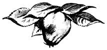

Айва

Характеристика породы
Айва вошла в культуру в глубокой древности. В Китае, Иране, Закавказье и Малой Азии она культивировалась уже 3–4 тысячи лет назад. Затем она проникла в сады Кавказа, Средней Азии, Южной и Юго-Восточной Европы, Северной Африки, позднее — в Центральную и Западную Европу, Северную Америку и в другие части земного шара. В настоящее время северная граница культуры айвы проходит примерно по линии Токио — Бейпин — Чунцин — южные и западные отроги Гималаев — Алма-Ата — Ташкент — Сталинград — Киев — Белосток — Берлин — Дублин. В небольшом количестве айва встречается и севернее этой линии, например, в Мичуринске, Прибалтике. Вертикальное распространение культуры айвы достигает значительных высот (в Дагестане до 1500 м над уровнем моря, в Таджикистане — до 2500 м).
Айва относится к подсемейству яблоневых (Pomoideae), к родам Cydonia, Chaenomeles и Docynia. Род Cydonia представлен одним видом С. oblonga Mill. или С. vulgaris Pers. — айва обыкновенная с разновидностями:
- pyriformis или typica (грушевидная),
- maliformis (яблоковидная),
- lusitanica (так называемая португальская с ребристыми, грушевидными плодами),
- marmorata (пестролистная),
- pyramidalis (пирамидальная).
Родина вида — Северный Иран, Закавказье, Малая Азия; в настоящее время в диком или одичалом виде встречается также в Средней Азии (Копет-Даг и др.), на Северном Кавказе, в Крыму, на Балканах и в странах Южной Европы.
Дикорастущая айва — кустарник или дерево до 8 м высоты, густокронное, с наклонным и иногда винтовидно закрученным стволом с тёмно-серой, гладкой корой, отпадающей тонкими пластинками.
- Ветви тонкие, с гладкой серой корой.
- Побеги желтовато-зелёные или серые, иногда красноватые, покрыты войлочком.
- Почки густо опушены.
- Листья очередные, эллиптические или несколько суженные к вершине, толстые, тёмно-зелёные, матовые, цельно-крайние, снизу густо опушённые и светлые.
- Цветки крупные, чашевидные, на концах коротких побегов (плодоветок), распускаются позднее листьев, ароматные. Лепестки белые, реже розоватые, числом пять. Тычинок обычно 20, в 3 ряда; столбиков 5, свободные, с опушённым основанием. Завязь пятигнёздная.
- Плоды по сравнению с другими дикорастущими семечковыми крупные (40–100 г), шаровидной, грушевидной или эллипсоидовидной формы, иногда ребристые, зелёные или жёлтые, без покровной окраски, покрыты войлочком, ароматные, с грубой, плотной, коротко-волокнистой, малосочной, терпковатой мякотью, почти не съедобной в свежем виде.
- Семена многочисленные, склеенные восковидным веществом.
Рис. 201. Побег, цветок и плод айвы.
В диком состоянии айва любит открытые местоположения. Имеются весьма засухоустойчивые биотипы, например, в Дагестане и Азербайджане, произрастающие в ксерофитных условиях наряду с держидеревом (Paliurus aculeatus), но вообще айва влаголюбива. К рельефу и почвогрунтам нетребовательна. На Кавказе (Дагестан) в лесах встречается до 800 м над уровнем моря.
К роду Chaenomeles (Восточная Азия) относится японская айва — Chaenomeles japonica Lindl. или Cydonia japonica Pers. и Ch. lagenaria Koidz. с двумя разновидностями — var. cathayensis Rehd. и var. Wilsonii Rehd. К этому роду относится также китайская айва — Ch. sinensis Koehne. В Китае имеются разнообразные сорта названных видов с плодами до 4 кг весом, однако в Европе японская и в меньшей степени китайская айва разводятся пока только как декоративные кустарники.
Род Docynia насчитывает пять видов с вечнозелёными и с полуопадающей листвой деревьями, имеющими лишь декоративное значение.
Характеризуя айву (сорта и формы С. oblonga), необходимо отметить прежде всего многообразие производственно-эффективных способов размножения культурных представителей этой породы. Помимо применения различных видов прививки, включая окулировку (подвоями служат айва, боярышник, реже яблоня), почти все сорта айвы значительно легче, чем сорта яблони, и тем более груши, размножаются отводками, черенками, порослью от пня и корневыми отпрысками, а некоторые сорта (например, Orange) семенами, что позволяет создавать корнесобственные, более долголетние насаждения.
Айва отличается:
- слаборослостью,
- скороплодностью,
- ежегодной, притом сильной продуктивностью,
- долговечностью.
Большинство сортов айвы характеризуется небольшим размером надземной системы, очень удобным в культуре. Такие сорта можно рекомендовать в качестве уплотнителей сильнорослых плодовых насаждений. Следует отметить, что, наряду с карликовыми, в Дагестане, Закавказье, Средней Азии имеются сильнорослые сорта с мощными деревьями, достигающими на орошаемых участках без укорачивания побегов 12 м высоты.
Деревья айвы, особенно корнесобственные, по долговечности не уступают или мало уступают яблоне. В Дагестане имеются плодоносящие деревья айвы в возрасте 60–70 лет и старше. В Армении (по Роллову) стволы айвы живут в среднем до 50 лет, затем усыхают и вырубаются, а из поросли формируются новые кусты. Деревья европейских сортов менее долговечны, обычно живут до 25–40 лет.
Морозостойкость породы в целом меньше, чем яблони и груши, но при повреждениях айва быстро восстанавливается, тогда как у яблони и груши это происходит реже и медленнее. Проблему повышения морозостойкости айвы успешно разрешает селекция. В частности, И. В. Мичуриным выведен морозостойкий сорт Северная.
Среди сортов айвы (например, в Дагестане, Средней Азии) имеются весьма ветростойкие, пригодные для посадки в местах, подверженных ветрам, в ветрозащитных и изгородевых насаждениях.
Айва благоприятно реагирует на орошение и особенно хорошо развивается и плодоносит во влажных (но не избыточно сырых) почвогрунтах, однако имеются и засухоустойчивые сорта, как Ахмед-жум в Дагестане. В Узбекистане, в местах с недостаточным орошением, в качестве подвоя для айвы применяют боярышник (Crataegus monogyna), а в местах с высоким стоянием грунтовых вод — айву, у которой корневая система ближе расположена к поверхности и мирится с временным избытком влаги в почве.
По нашим наблюдениям, айва успешно произрастает в плавнях р. Кубани. По сообщению Голубинской, в Крыму она растёт даже на заболачиваемых местах.
Рис. 200. Цветущее дерево айвы.
К местоположению и почвам айва нетребовательна. Предпочитая, как и большинство плодовых пород, ровные участки и пологие склоны с питательной, суглинистой, влагоёмкой почвой, айва достаточно хорошо развивается и плодоносит на тяжёлых, глинистых почвогрунтах (Табасаранский район, Дагестанской АССР), на известковых почвах Армении и Нагорного Дагестана, на песках Апшеронского полуострова и даже на значительно засолённых местах с близкой подпочвенной водой возле Астрахани (по Викторовскому). В более северных широтах для айвы выбирают защищённые местоположения и менее тяжёлые почвы, применяя для более влажных и тяжёлых почв в качестве подвоя айву, для более песчаных и сухих — боярышник (морозоустойчивость последнего считается выше, чем айвы). В качестве морозостойкого подвоя для айвы (и груши) может быть использован мичуринский сорт Северная. В горных районах айва встречается на крутых, каменистых склонах (Унцукульский район, Дагестанской АССР) и в узких ущельях, которые трудно использовать для более сильнорослых пород.
Грибными болезнями айва поражается значительно менее, чем яблоня и груша. Чаще встречаются бурая пятнистость (Entomosporium maculatum Lcv.) и плодовая гниль (Monilia fructigena Pers.). Из вредных насекомых наибольший вред наносят различные слоники (Rhynchites) и яблонная плодожорка (при организации регулярной борьбы с ними вредоносность их не выше, чем на яблоне и груше).
Весьма ценным биологическим свойством айвы является позднее цветение её — примерно на 10–15 дней позднее яблони, когда опасность повреждения раскрытых цветков утренниками уже мало вероятна. Однако побеги, несущие бутоны, довольно нежны и при сильных заморозках подмерзают.
Айва рано вступает в пору плодоношения, обычно на 4–5-м году после окулировки. Но есть сорта, начинающие плодоносить с 2–3-летнего возраста (Исполинская из Лесковац, Чемпион, Ван Димен, Мича плодородная, Голотлинская яблоковидная и др.). Полное плодоношение начинается на 8–10-м году и продолжается 25–50 лет, в зависимости от сорта, подвоя и условий произрастания.
Ценнейшее свойство айвы — её ежегодное и притом высокое плодоношение, чем она выгодно отличается от яблони и груши, большинство сортов которых при обычной садовой технике плодоносит через год. Многие, а может быть и все сорта айвы, самоплодны, что также является ценным биологическим свойством этой плодовой породы.
В Крыму средняя продуктивность айвы составляет, по данным Голубинской, примерно от 115–120 до 150 кг с одного дерева. В Армении, по Роллову, урожай с одного дерева колеблется от 48 до 128 кг плодов, т. е. в среднем 17,6 т с 1 га (при 200 деревьях на 1 га). В Сталинабадском районе Таджикистана продуктивность айвы 25–30-летнего возраста, по Сперанскому, — 15–18 кг с дерева (3–3,6 т с 1 га), в Кабадиане — 21–26 кг с дерева (4,2–5,2 т с 1 га), при ежегодном плодоношении.
В Дагестане, по учёту автора в 1934–1936 гг., возрастная продуктивность айвы такова:
- до 6 лет — 4,3 кг с дерева,
- 7–12 лет — 16 кг,
- 13–18 лет — 18,4 кг,
- 19–45 лет — 26,9 кг (на 1 га — 5,4 т).
Необходимо отметить, что айва в Дагестане, да и во многих других плодовых районах СССР, не пользуется тем вниманием, какое уделяется основным породам. При подборе лучших сортов и высокой садовой технике урожайность будет, по нашему мнению, не менее 20–25 т с 1 га ежегодно.
К числу высокопродуктивных сортов относятся:
- Мича плодородная,
- Чемпион,
- Ри мамонтовая,
- Берецкий,
- Анжерская,
- Яблоковидная братьев Симон-Луи,
- Португальская,
- Голотлинская яблоковидная,
- Ахмед-жум,
- Базар-хайва,
- Кыш-айва и др.
По времени созревания имеются:
- ранние сорта, урожай которых снимают в начале сентября и созревает через несколько дней, например:
- Персидская сладкая,
- Ван Димен,
- Фуллер,
- Чайлдс и др.;
- поздние, плоды которых снимают в октябре и сохраняют в обычных плодохранилищах до февраля—марта:
- Чемпион,
- Мича плодородная,
- Джардам-айва в Азербайджане,
- Турш в Армении,
- Голотлинская яблоковидная,
- Ктюн-жум,
- Ахмед-жум,
- Гуржи-хайва,
- Базар-хайва в Дагестане.
По транспортабельности плоды айвы не уступают зимним яблокам, но требуют более бережного обращения при съёме и упаковке, так как даже небольшие нажимы и ранения кожицы часто приводят к загниванию плодов в лёжке. При стирании пушка и отделении от плодоветок также следует соблюдать осторожность, чтобы не повредить кожицы.
Использование плодов айвы разнообразно. Они потребляются:
- в виде:
- свежем,
- варёном,
- печёном
- замороженном;
- в составе различных кушаний;
- как приправа (Кавказ, Средняя Азия);
- идут для:
- сушки,
- варенья,
- джема,
- пюре,
- компотов,
- желе,
- мармелада,
- цукатов,
- мёда,
- отгона с водой и сиропом,
- пастеризованного сока,
- вина (в смеси с яблоками);
- ароматизации комнат (Китай);
- а также в медицине (отвар, семена).
Для потребления в свежем виде пригодны не все сорта. В литературе в качестве столовых рекомендуются:
- Буржо,
- Чемпион,
- Мича плодородная,
- Персидская сладкая,
- Оранжевая;
- на Кавказе —
- Джардам-айва,
- Ордубадская,
- Сенейвас,
- Базар-хайва и другие;
- в Средней Азии — ряд сладких сортов, например,
- Сары-беги,
- Ошская ранняя,
- Самаркандская.
На консервных предприятиях из айвы изготовляется, главным образом, варенье — самое ароматное из фруктовых варений. Кроме плодов, в Армении для варенья используются и лепестки цветков.
Все виды продукции из айвы отличаются высокой ароматичностью благодаря наличию в кожице, по Ф. В. Церевитинову, энаптово-этилового и пеларгоново-этилового эфиров.
Кроме того, айва богата:
- сахарами (от 9 до 10,9%),
- кислотами (0,85–2%, в японской до 4,1 %),
- пентозанами (1,78%),
- дубильными веществами (0,42–0,66%, в японской до 0,61%),
- пектином (0,33%) и особенно протопектином, что и обеспечивает высокое качество желе, мармелада, варенья и других изделий из айвы.
Зрелые плоды большинства сортов айвы окрашены в однотипно жёлтый или оранжевый цвет с зелёным и золотистым оттенками, но некоторые сорта (например, в Средней Азии) остаются до конца зеленоплодными. Румянец в виде загара бывает редко.
По степени опушённости сорта делятся на группы — от мало опушённых (Оранжевая, Мича плодородная, Анжерская, Голотлинская яблоковидная и др.) до сильно войлочных (Чемпион, Фуллер, Португальская, Берецкий и др.).
По размеру плодов айва превосходит все другие породы умеренного пояса, в том числе и грушу, имеются сорта, у которых вес одного плода достигает:
- 2000 г и даже больше:
- Исполинская из Лесковац,
- Гигантская из Враньи,
- Кыш-айва,
- Папыш;
- 1000 г встречается у сортов:
- Берецкий,
- Ри мамонтовая,
- Ананасная,
- Чемпион,
- Ван Димен,
- Санта Роза,
- Чудовищная из Базена,
- Китайская,
- Геокчайская,
- Ктюн-жум,
- Алуштинская и др.
По форме плодов сорта распределяются на следующие группы:
- шаровидные:
- Оранжевая,
- Анжерская,
- Ананасная и др.;
- плоско-цилиндровидные (яблоковидные):
- Фуллер,
- Константинопольская,
- Голотлинская,
- Яблоковидная,
- Гуржи-хайва;
- эллиптические (и высоко-цилиндровидные):
- Китайская,
- Смирнская,
- Анпак-айва,
- Ктюн-жум,
- Базар-хайва,
- Алуштинская,
- Дерекойская;
- вогнуто-конусовидные (грушевидные):
- Чемпион,
- Португальская,
- Берецкий,
- Буржо,
- Грушевидная,
- Чудовищная из Базена,
- Персидская сахарная,
- Ри мамонтовая,
- Мича плодородная;
- конусовидные (и выпукло-конусовидные):
- Ван Димен,
- Ахмед-жум.
Мировой сортимент айвы весьма ограничен. Если число сортов яблони, например, исчисляется тысячами, то айвы — десятками.
У нас культивируют следующие сорта.
На Украине и в Крыму:
- Португальская,
- Берецкий,
- Исполинская из Лесковац,
- Чудовищная из Базена,
- Анжерская,
- Гигантская из Враньи,
- Яблоковидная братьев Симон-Луи,
- Обыкновенная (Commun),
- Константинопольская,
- Персидская сахарная,
- Буржо,
- Чемпион,
- Мича плодородная,
- Ри мамонтовая,
- Ван Димен,
- Оранжевая,
- Алуштинская,
- Дерекойская,
- Бахчисарайская;
в Нижнем Поволжье:
- Маслёнка ранняя,
- Зимовка,
- Маслёнка поздняя,
- Персидская сахарная,
- Скороспелка,
- Анжерская и др.;
в Дагестане:
- Ктюн-жум,
- Ахмед-жум,
- Гуржи-хайва,
- Базар-хайва,
- Голотлинская яблоковидная,
- Араканская ребристая,
- Гельмес,
- Пейваз,
- Чимильхи,
- Кишеньаухская,
- Тлохская,
- Буйнакская,
- Шаровидная,
- Кафыркумухская ребристая и др.;
в Азербайджане:
- Геокчайская,
- Джардам-айва,
- Анпак (Эмпек)-айва,
- Ленкоранская гладкая,
- Ширин-айва,
- Даш-айва,
- Сурага,
- Туту,
- Папыш,
- Андамичская,
- Турш-айва,
- Мелек-айва,
- Шекер-айва,
- Ордубадская,
- Ленкоранская жёлтая сладкая;
в Таджикистане:
- Каратагская сладкая,
- Беги-Туруш,
- Раразская грушевидная,
- Рохатинская грушевидная,
- Обурдонская,
- Кубарчатая,
- Кулябская яблоковидная,
- Рохатинская грушевидно-округлая,
- Дашмадринская яблоковидная,
- Дардарская яблоковидная,
- Кунгуртская,
- Урминтанская плоскоокруглая,
- Гойя-каран,
- Казкан,
- Гайнак,
- Роата,
- Дисар-кишлак,
- Яни-курган;
в Узбекистане:
- Алма-беги,
- Алмурут-беги,
- Ошская ранняя,
- Ташкентская ранняя,
- Атти-беги,
- Ширин-беги,
- Кук-кичик,
- Кук-улькан,
- Самаркандская жёлтая крупноплодная,
- Самаркандская жёлтая мелкоплодная,
- Ташкентская крупная,
- Сары-беги.
Несмотря на ряд ценных биологических и хозяйственных признаков, айва не получила в СССР того распространения, которого заслуживает. Так, в Крыму айва составляет 0,2% плодовых насаждений (в долине р. Качи — 0,6%), в Дагестане — 1,09%, в Узбекистане (Хорезм) — 0,83%. Лишь в некоторых плодовых районах Закавказья и Узбекистана айва несколько более распространена; например, в Андижанском районе УзССР она составляет 13% плодовых деревьев, по Костиной.
С развитием консервной промышленности удельный вес айвы, несомненно, возрастёт, а с внедрением в производство лучших сортов и высокой садовой техники урожайность айвовых садов намного будет превышать существующую, связанную с наличием малоценных, полукультурных сортов и почти полным отсутствием ухода за деревьями.